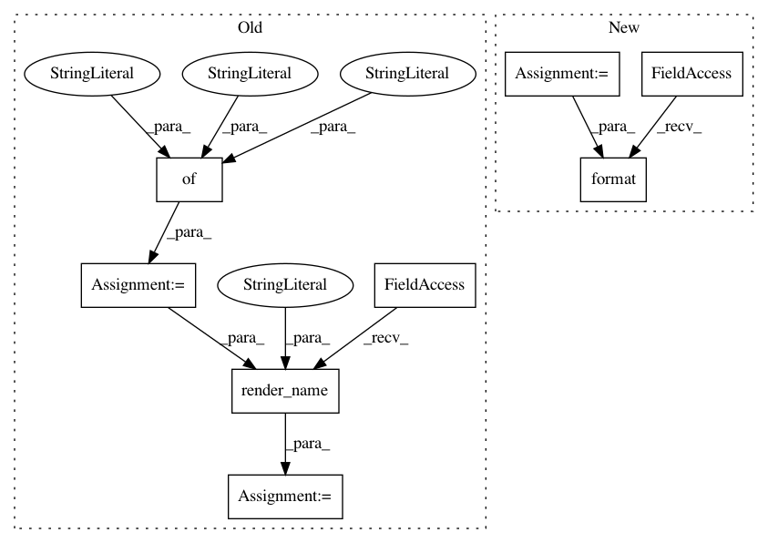

c7e6e4cfd90d2d05bb9c9dffd519b32e9a1f15f6,src/python/pants/reporting/html_reporter.py,HtmlReporter,do_handle_log,#HtmlReporter#Any#Any#,215
Before Change
HtmlReporter._log_level_css_map[level], self._render_message(*msg_elements))
// Generate some javascript that appends the content to the workunit"s div.
args = {
"content_id": uuid.uuid4(), // Identifies this content.
"workunit_id": workunit.id, // The workunit this reporting content belongs to.
"content": content, // The content to append.
}
s = self._renderer.render_name("append_to_workunit", args)
// Emit that javascript to the main report body.
self._emit(s)
After Change
def do_handle_log(self, workunit, level, *msg_elements):
Implementation of Reporter callback.
message = self._render_message(*msg_elements)
s = self._log_fmt_string.format(content_id=uuid.uuid4(),
workunit_id=workunit.id,
css_class=HtmlReporter._log_level_css_map[level],
message=message)
// Emit that javascript to the main report body.
self._emit(s)
In pattern: SUPERPATTERN
Frequency: 3
Non-data size: 8
Instances
Project Name: pantsbuild/pants
Commit Name: c7e6e4cfd90d2d05bb9c9dffd519b32e9a1f15f6
Time: 2015-10-23
Author: benjyw@gmail.com
File Name: src/python/pants/reporting/html_reporter.py
Class Name: HtmlReporter
Method Name: do_handle_log
Project Name: pantsbuild/pants
Commit Name: c7e6e4cfd90d2d05bb9c9dffd519b32e9a1f15f6
Time: 2015-10-23
Author: benjyw@gmail.com
File Name: src/python/pants/reporting/html_reporter.py
Class Name: HtmlReporter
Method Name: end_workunit
Project Name: pantsbuild/pants
Commit Name: c7e6e4cfd90d2d05bb9c9dffd519b32e9a1f15f6
Time: 2015-10-23
Author: benjyw@gmail.com
File Name: src/python/pants/reporting/html_reporter.py
Class Name: HtmlReporter
Method Name: start_workunit